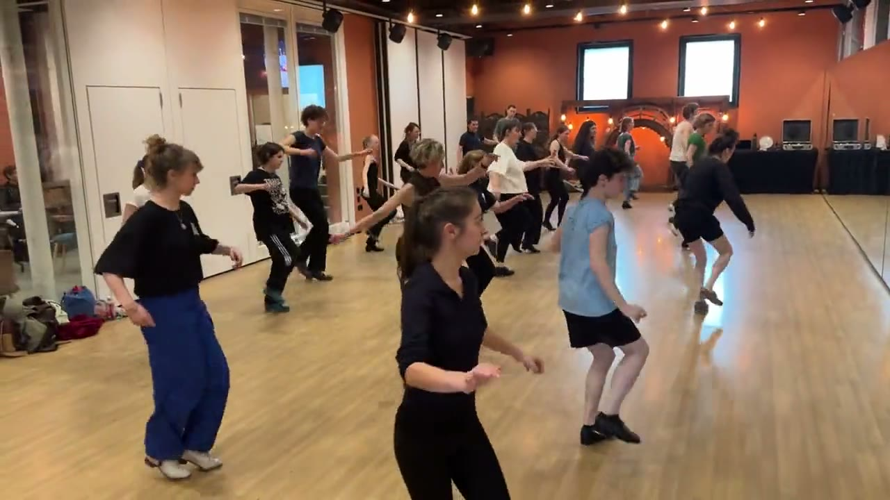
Tapdance Promotion & Shoonya Dance Centre present
6 & 7 March
2027
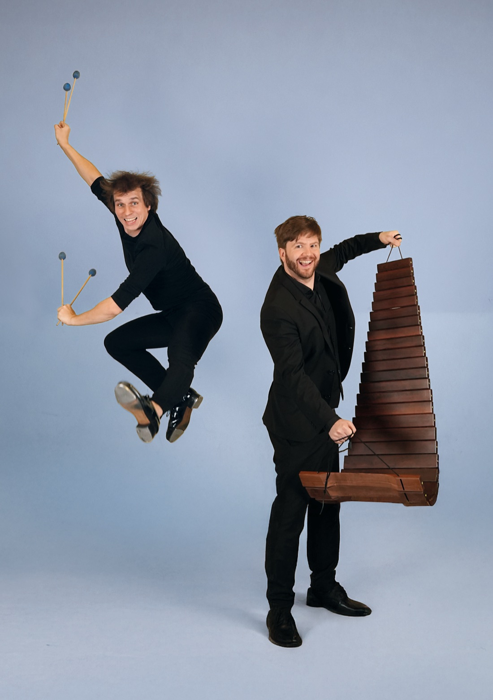
Wooden Impact · © Lotta Ramseyer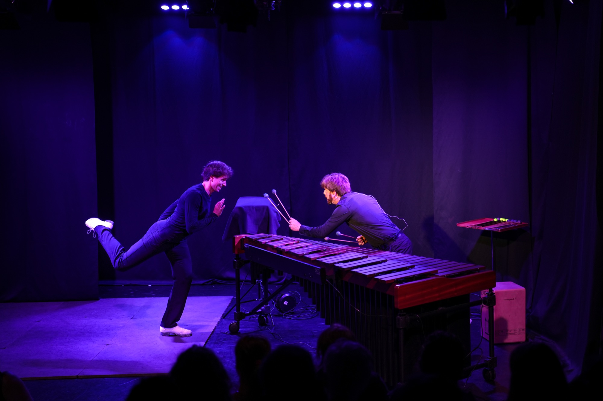
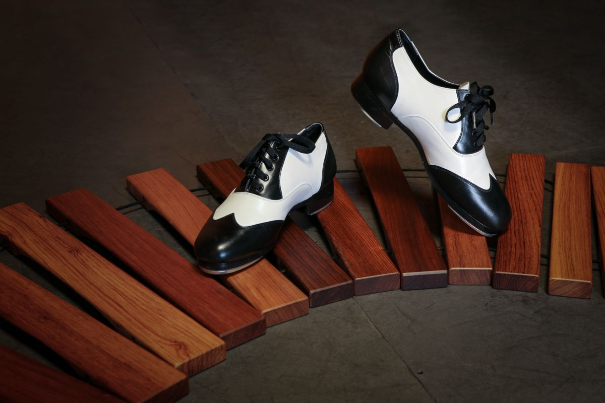
© Lotta RamseyerWooden Impact
Ta-Bamm!!!
The show · Saturday nightMarimba meets tap dance. Manuel Leuenberger plays, Daniel Borak dances, and the floor becomes a second instrument. Four- and five-star reviews at the Edinburgh Fringe 2025.
About the show
When the sound of wood meets rhythm and music becomes visible, you get Wooden Impact: the Swiss duo of marimba player Manuel Leuenberger and tap dancer Daniel Borak.
In their full-length show «Ta-Bamm!!!» marimba and tap dance merge into a stage form between concert, performance and physical theatre. Music, movement, humour and theatre come together without spoken language, so the show is understood across languages and borders.
The marimba is the visual and musical centre of the stage, and the dance floor becomes an instrument too. The repertoire runs from Johann Sebastian Bach and contemporary marimba music to improvisations and arrangements written for the duo.
Wooden Impact has performed in Belgium, France, Germany, the Czech Republic, Sweden and the United Kingdom. Their run at the Edinburgh Fringe Festival 2025 earned several four- and five-star reviews. Other highlights were the Pilsen Tap Festival and standing ovations at the Stockholm Tap Festival 2026.
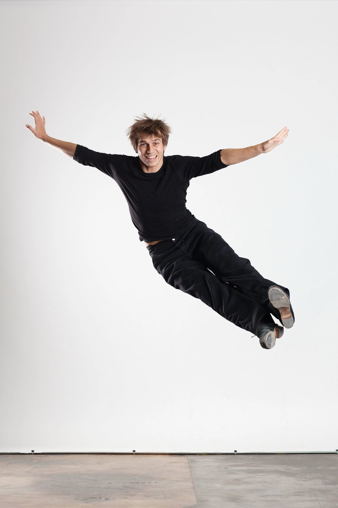
© Milad AhmadvandDaniel Borak
Workshops · SwitzerlandEleven gold medals at the IDO World Tap Dance Championships, six of them solo.
Full bio
Daniel “Dani” Borak is an internationally known tap dancer and multi-genre performer, choreographer and teacher. He loves to experiment and works with a wide range of performing and visual artists, and has developed his own mixed vocabulary that pushes traditional tap dance further.
He grew up in Winterthur, Switzerland, in his mother's dance school, Liba Borak, and discovered tap dance at the age of five. Between 2000 and 2009 he competed at the IDO World Tap Dance Championships in Riesa, Germany, and won eleven gold medals, six of them in the solo category. In 2010 he graduated from the Zurich Dance Theatre School (ZTTS), with training in ballet, jazz, modern and contemporary dance, hip hop, flamenco, Feldenkrais, Pilates and choreography.
From 2017 to 2019 he was the first Artist in Residence of the Chicago Human Rhythm Project, three years in a row. As a guest teacher he gives workshops and performs at festivals in Germany, Italy, France, the Czech Republic, Colombia, England, Spain, Brazil, Ukraine, Croatia, Poland and the USA.
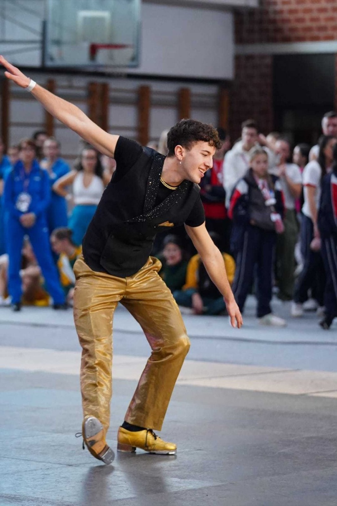
Tommaso Maria Parazzoli
Workshops · ItalyWorld Tap Dance Champion in the trio category, top six in the world as a soloist.
Full bio
Tommaso Maria Parazzoli is a professional tap dancer from Bologna, Italy. He began in 2012 at the Bernstein School of Musical Theatre and was soon performing on national and international stages.
He has trained with internationally renowned artists, earned numerous scholarships and won awards, including World Tap Dance Champion in the trio category with the D'Angelo Brothers and a top 6 world ranking in the solo category.
He has performed as a soloist in theatre productions, galas, private events and television shows, including OnDance, Effetti Domino, Dalla Strada al Palco, Splendida Cornice and Viva la Danza (2024 and 2025), working with ballet star Roberto Bolle across two editions and later projects.
He is a member of the international tap company Sabor – Life is Rhythm, which performs across Europe and toured Mexico in 2025. That same year he was selected for the Jacob's Pillow Tap Dance Program.
Tommaso teaches at the Bernstein School of Musical Theatre in Bologna, Italy's first musical theatre academy, and is regularly invited to teach at festivals in Italy and abroad. He treats tap as both dance and music, and works with jazz trios, big bands and symphony orchestras.
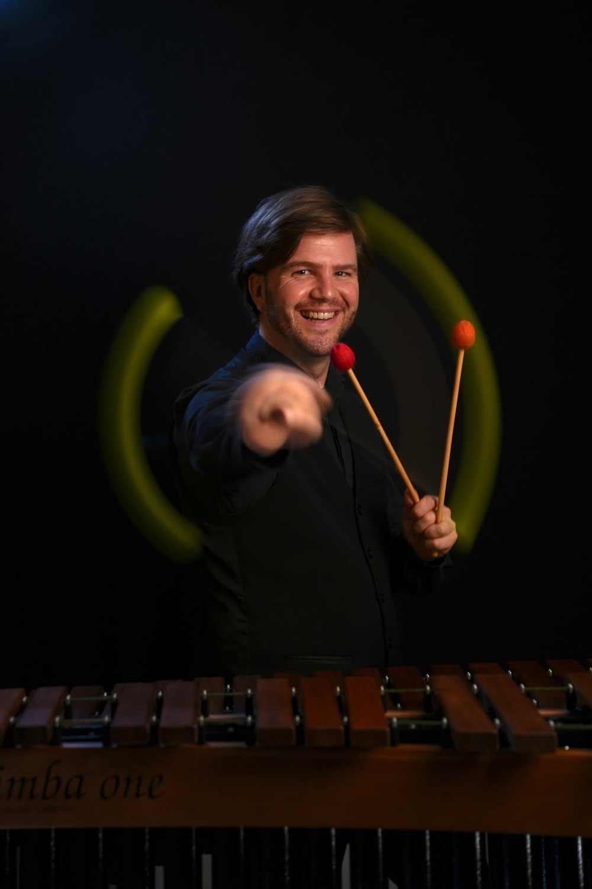
Manuel Leuenberger
Workshop · SwitzerlandMarimba soloist. Teaches The Architecture of Rhythm: how rhythms are built, and how time turns into movement.
Full bio and workshop
Manuel Leuenberger plays marimba as a soloist and in several ensembles: with a clarinettist in the duo Acoustic Voyagers, in the marimba ensemble Octostix, and with tap dancer Daniel Borak in Wooden Impact. His own arrangement of J.S. Bach's Marimba Concerto in D minor, BWV 1052, for marimba and organ is on the CD Bach in Brazil.
In 2020 he played as soloist with the NZO | Neues Zürcher Orchester under Martin Studer in the Berliner Philharmonie. In 2022 he played Satoshi Yagisawa's Marimba Concerto with the Zurich City Band and Niki Wüthrich in the main hall of the renovated Tonhalle Zürich, and gave the world premiere of Mathias Rüegg's new arrangement of Rhapsody in Blue for solo marimba and symphonic wind band. Since early 2024 he has worked full time as a freelance artist. He is a Marimba One Discovery Artist and won the Wetzikon Culture Prize.
The Architecture of Rhythm. Rhythm is more than something we feel: it is something we can understand, organise and shape. In this playful workshop we explore how rhythms are built, how to think in rhythmic groups rather than single notes, and how time turns into movement and space. We build, see, hear and move rhythm, and discover its architecture from the inside out.
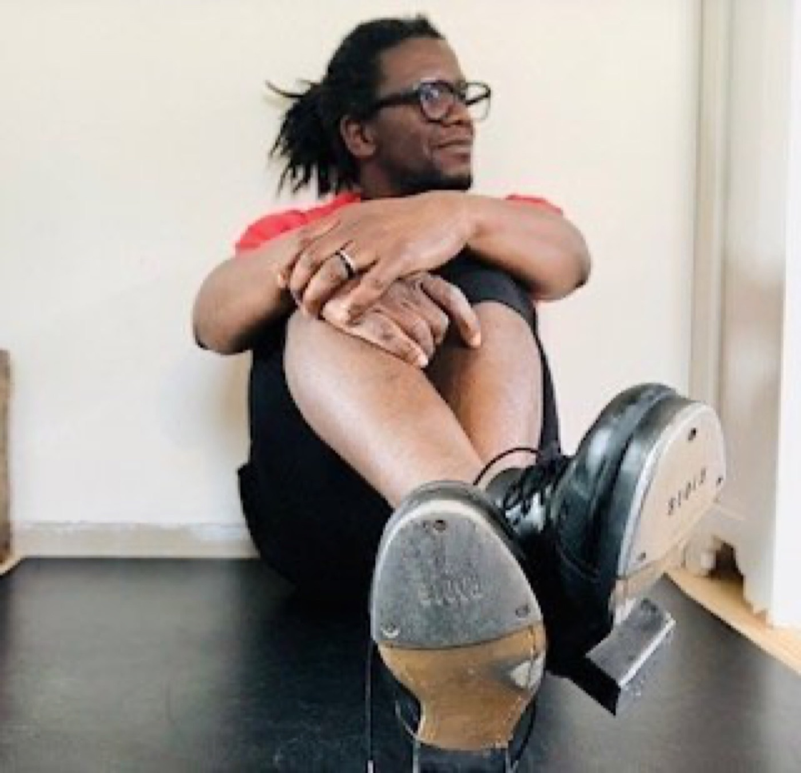
Free taster class
With Teddy · Tapdance PromotionFor people who have never tapped.
About Teddy
Teddy was hooked on hip-hop and tap dance as a child. When he arrived in Belgium, he got a series of tap lessons at Tapdance Promotion in Ghent as a birthday present, and after the first lesson he regretted not starting earlier. He is drawn to tap dancers who brought something new, with Savion Glover at the top of his list, and Rhythm Tap is his style.
He has taken workshops with Jason Janas, Sara Reich, Michelle Dorrance, Jason Samuel Smith and many other dancers with a strongly rhythmic style. After ten years as a student of Alexandre and Lut, and years as a regular substitute, he is now a permanent teacher at Tapdance Promotion. His motto: “Tap, clap, slide, sing while you dance! Use your body, smile… enjoy!”
Programme
Classes at Shoonya Dance Centre. Pick the ones at your level.
Times follow once the programme is confirmed.
Practical
Workshops are at Shoonya Dance Centre, Stapelplein 41, 9000 Gent, a 10-minute walk from Gent-Dampoort station. There is street parking on Stapelplein. The Saturday evening show is at Theater Scala, Dendermondsesteenweg 163-165, 9000 Gent.
Dancers who already take tap classes. Workshops are split by level, from advanced beginners to advanced, so you pick the classes that fit you. The free taster class is for people who have never tapped.
Registration opens ahead of each edition via shoonyadance.com. A Shoonya ID is required for all registrations.
Reach us through the Shoonya contact page, or follow @shoonyadance for news and announcements.
Once a year, a weekend of tap in Ghent.
Tapdance Promotion hosts the festival together with Shoonya Dance Centre. Dancers who take tap classes in Belgium, the Netherlands and further away come to train with international guest teachers and see them perform.
The first edition was in 2023. 2027 is the fifth.
Hosted by Tapdance Promotion
At Shoonya Dance Centre · Stapelplein 41, 9000 Gent
Organised with the support of Stad Gent & Gent Sport
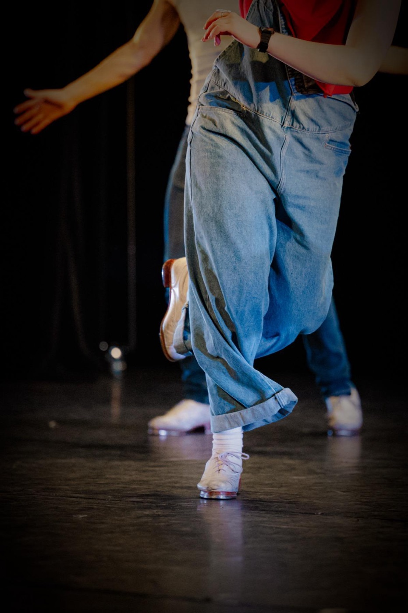
Past editions
2026
Fourth Edition
"Not Dead Yet" — Josh Hilberman at Shoonya
Josh Hilberman brought his show Not Dead Yet: Dances & Stories, spanning generations of tap history, to the Shoonya Theatre for two performances on the Saturday evening. The weekend's workshops featured Alexandre Van Goethem, Peter Kuit, Josh Hilberman, and La Liz leading palmas, alongside a free taster class open to all.
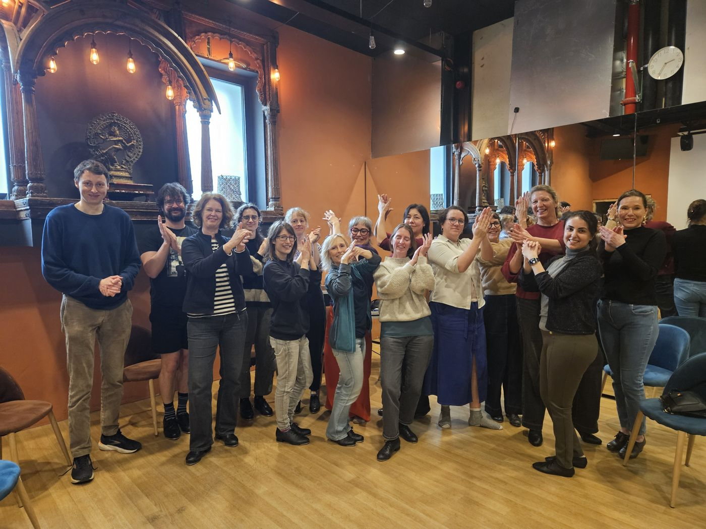
2025
Third Edition
A Pies y Manos at the Minard
Estefania Porqueras (Barcelona) taught tap advanced, choreography, and intermediate levels, Jep Meléndez led body percussion, and Alexandre Van Goethem taught advanced beginners. The Sunday performance, A Pies y Manos — Jep Meléndez, Benito Cabrera, and Tomás Fariña blending Canarian music, tap, and body-drumming — played at the Minard theatre, with an Open Stage inviting the community to perform on the Saturday.
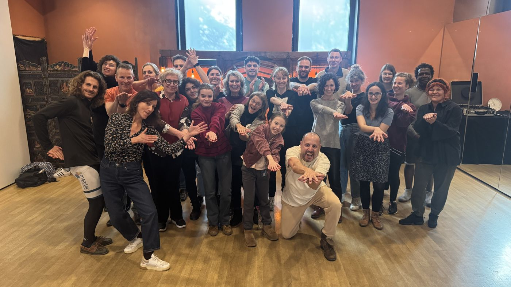
2024
Second Edition
Open Tap Night and a cutting contest
Jep Meléndez taught body percussion, Josh Hilberman led workshops drawing on decades studying with tap legends including Brenda Bufalino, and Joëlle Ribant taught the advanced "Begin the Beguine" choreography workshop. The Open Tap Night featured a cutting contest on the Saturday evening.
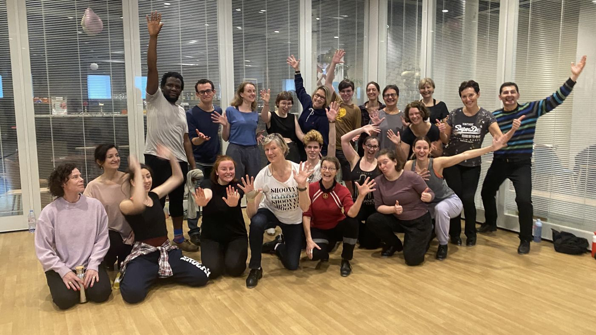
2023
First Edition
Laia Molins and Joëlle Ribant
The first Ghent Tap Festival brought Laia Molins (Barcelona) and Joëlle Ribant (Brussels) for advanced and intermediate workshops, Alexandre Van Goethem for advanced beginners and the Tap Jam, and a free Tap Dance Initiation with Teddy Robinet.
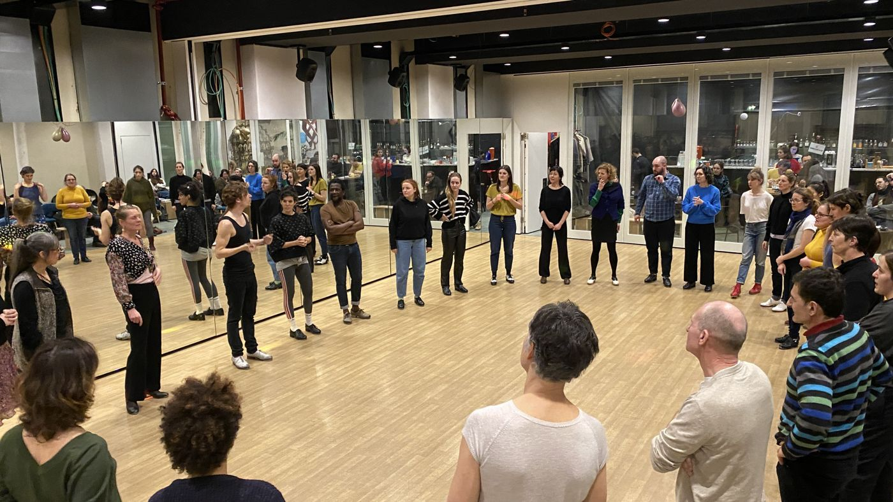
Past guest teachers
A selection from 2023 to 2026.
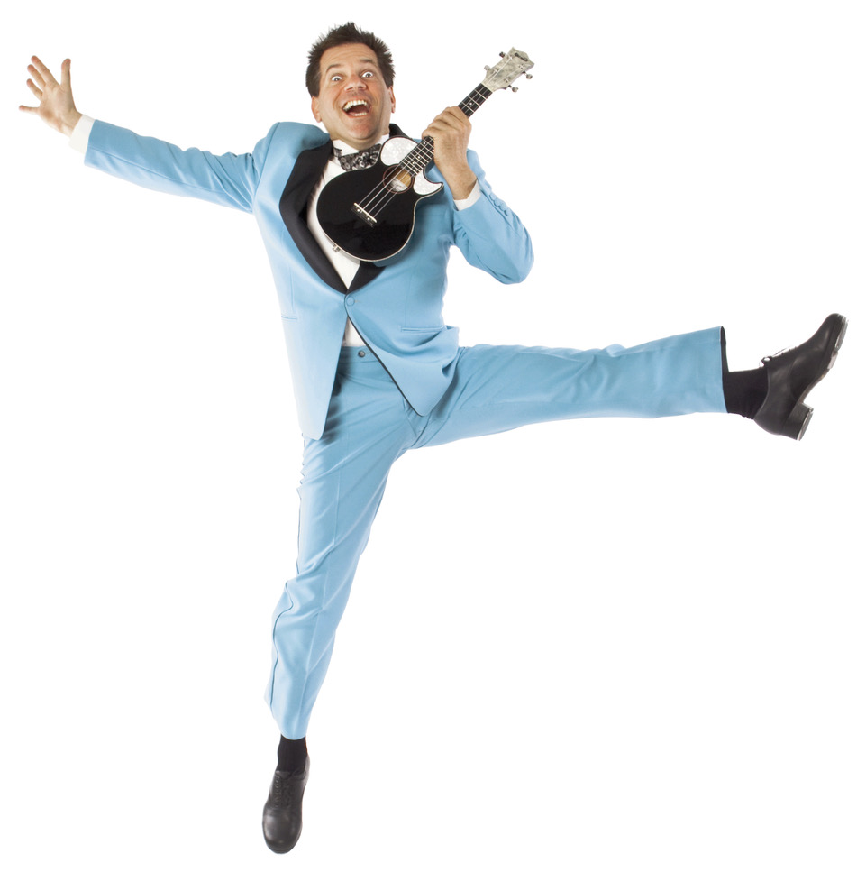
Tap dance artist based in Liège.
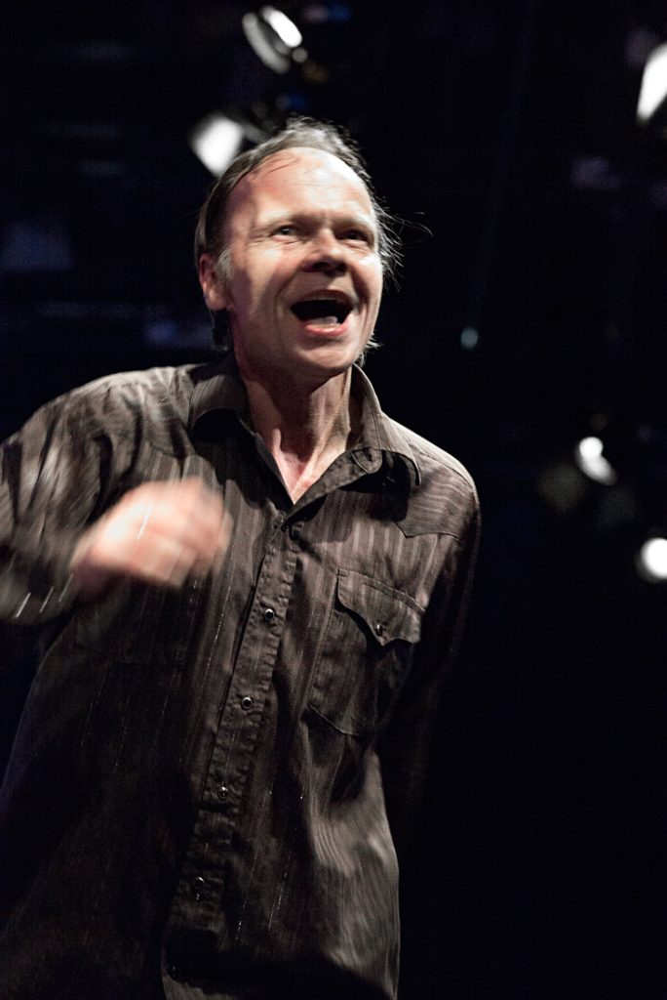
Dutch tap dancer since 1977 — from a speed-metal band to touring stadiums with Candy Dulfer and eight years with the David Kweksilber Big Band.
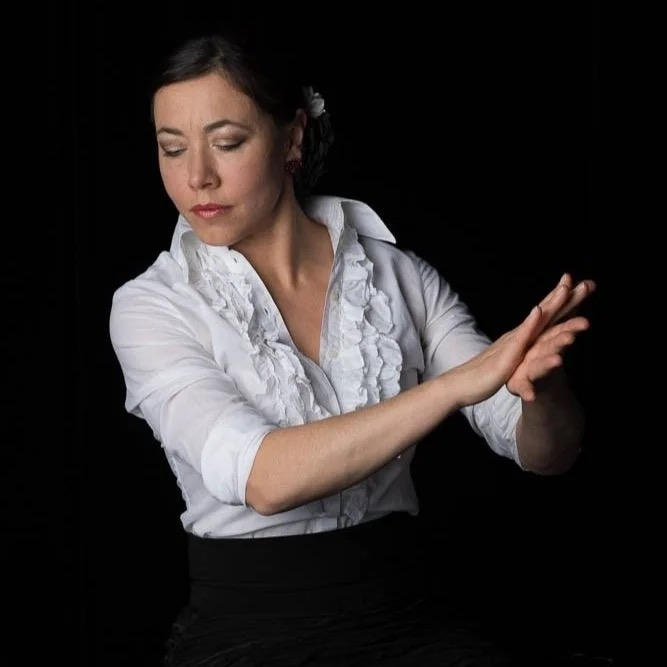
Brings over 25 years of flamenco experience.
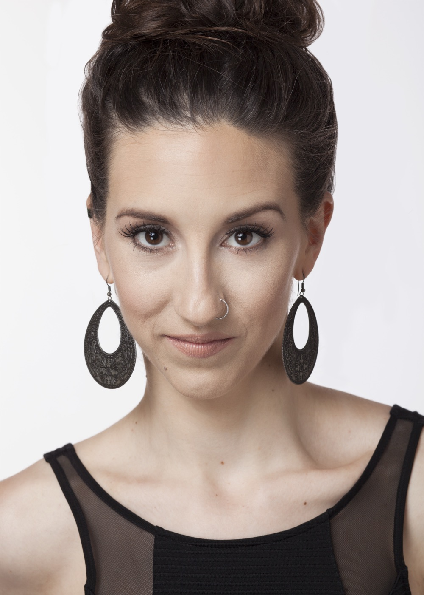
Barcelona-based tap dancer, choreographer, and educator.
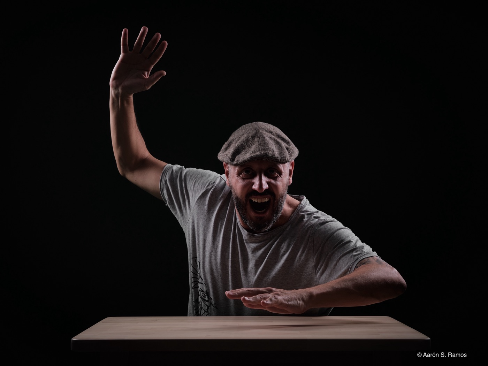
Spanish body percussionist, tap and sand dancer.© Aarón S. Ramos
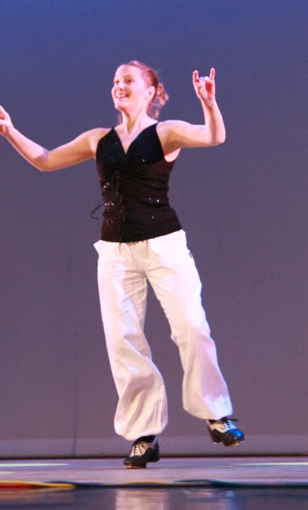
Brussels-based tap dancer.© Philippe Tollet